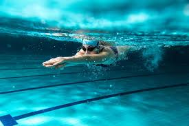
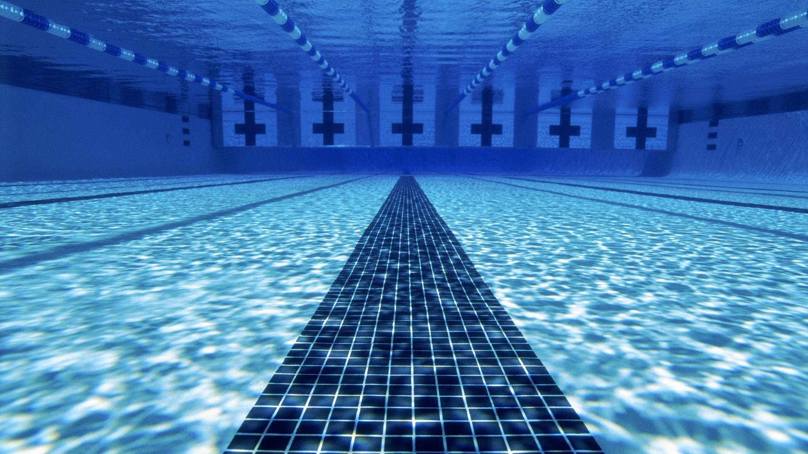

IL NUOTO 

Il nuoto è l'attività motoria che permette il galleggiamento e il moto del proprio corpo nell'acqua.
Considerato uno sport completo e salutare, che distribuisce il movimento omogeneamente su tutto il corpo, favorisce la salute, la longevità e il benessere fisico e psicologico.
Esso spesso comporta benefici estetici e fisici: solitamente si ottiene un aumento della massa magra e una riduzione di quella grassa,
lo sviluppo dell'impalcatura ossea e l'espansione della gabbia toracica, il miglioramento della coordinazione motoria e respiratoria e la riduzione della spasticità.
DIVERSI STILI
Stile Libero
Rana
Dorso
Delfino